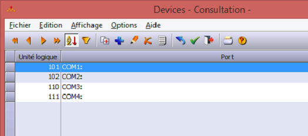

Les fonctions DirectCOM permettent de dialoguer avec un port série d'un poste en client léger WPF. Celui-ci peut être en mode de transport local, service web ou socket.
Ces fonctions sont inopérantes avec le client léger Html5 (celui-ci, contraint par les restrictions de sécurité du navigateur, ne peut pas accéder au matériel du poste client).
Les fonctions DirectCOM sont exposées au sein du module yDirectPrinter.dhop, qui devra être référencé par les programmes appelants. (instruction "module yDirectPrinter.dhop").
Paramétrage des voies COM dans Harmony
Le menu Paramètres > Unités V24 de Harmony permet de paramétrer les voies COM.

Dans la table des Devices qu'ouvre ce menu, les ports sont identifiés par un numéro de voie (colonne "Unité logique").
Dans le mode fiche on peut gérer les paramètres de la voie sélectionnée (vitesse, nombre de bits de données, de bits stop, parité, ...).
Note : Les ports parallèles ne sont plus gérés dans Harmony (ce type de port est donc obsolète, bien que l'option soit restée sélectionnable).
Personnalisation des paramétrages des voies série.
Les paramètres des ports sont stockés dans le fichier fconfig.dhfi, donc sur le serveur. Ils sont donc communs à tous les postes clients. On peut cependant faire une personnalisation poste à poste, soit :
en créant des voies supplémentaires avec les paramétrages personnalisés, mais il faudra lier la voie utilisée au poste dans le programme,
en personnalisant les paramètres dans la base de registre du poste client qui requiert ces paramètres spécifiques (recommandé).
La personnalisation des paramètres dans la base de registre des postes clients suit le protocole suivant :
Les informations sont stockées dans HKEY_CURRENT_USER\Software\Divalto\divalto.ini\DirectCom
Pour que la personnalisation soit active, il faut ajouter le champ <numéro de la voie>param et lui affecter la valeur "1"
Pour chaque paramètre personnalisé, le nom de la clé est codé par <numéro de la voie><nom du paramètre> et sa valeur est celle, personnalisée, que l'on souhaite appliquer sur ce poste.
Les paramètres personnalisables pris en compte sont récapitulés dans le tableau ci-après.
|
Nom du paramètre |
Description |
Valeurs |
|
<n°de voie>Name |
Nom du port sur le poste local. Ce nom est celui du port sur le poste client, qui peut être diffèrent de celui renseigné dans la table des Devices de Harmony. |
nom du port sur la machine locale |
|
<n°de voie>Bauds |
Vitesse du canal en bauds |
1 200, 1 800, 2 400, 4 800, 9 600, 19 200, 38 400, 56 000, 128 000 par exemple. |
|
<n°de voie>Bits |
Nombre de bits de données |
5, 6, 7 ou 8 |
|
<n°de voie>Stop |
Nombre de bits de stop |
1, 2 ou 3 (la valeur 3 signifie 1.5 bits de stop). |
|
<n°de voie>Parity |
Parité |
1 = aucune, 2 = paire, 3 = impaire. |
|
<n°de voie>Xon |
Activation/Désactivation du mode Xon/Xoff |
1 = toujours oui, 2 = toujours non. |
|
<n°de voie>DTR |
Activation/Désactivation du mode DTR |
1 = toujours oui, 2 = toujours non. |
|
<n°de voie>RTS |
Activation/Désactivation du mode RTS |
1 = toujours oui, 2 = toujours non. |